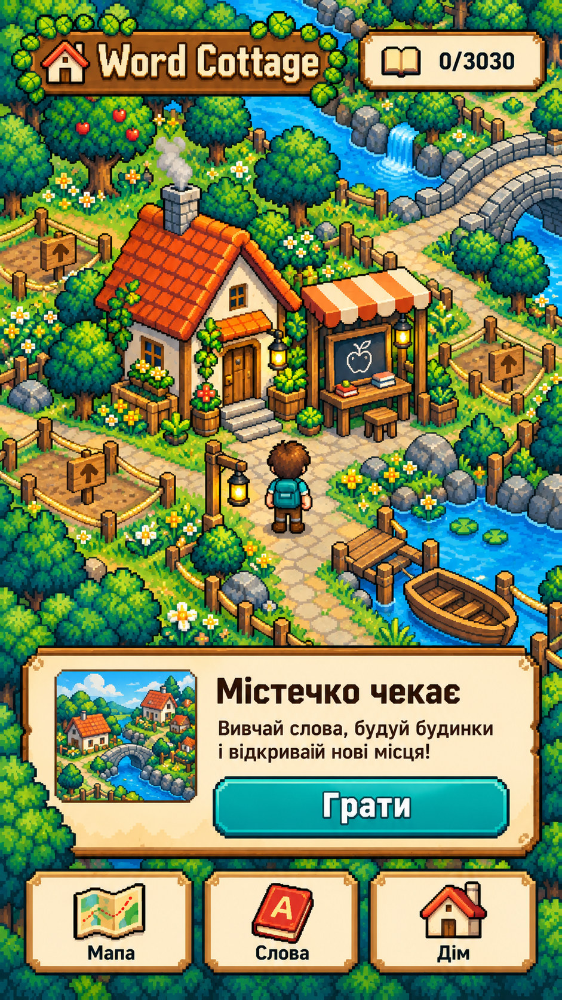

Перші кроки в містечку
1 / 451. Що отримує гравець · сцена 1 / 3

Завантаження зображення…
Не вдалося завантажити зображення.
Початковий дім і заплановані проєкти. Місто розвиватиметься завдяки підтвердженим словам.
Усі розділи та сцени
Обери розділ або відкрий окреме зображення. Галерея завантажує лише поточну сцену.